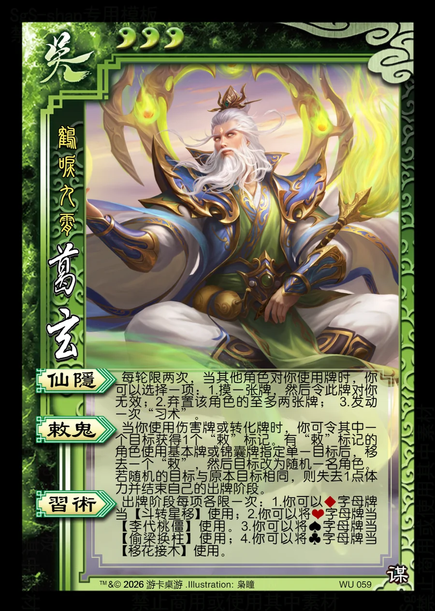

点击卡面查看大图
吴
谋葛玄
♥3鹤唳九霄
仙隐
每轮限两次，当其他角色对你使用牌时，你可以选择一项：1.摸一张牌，然后令此牌对你无效；2.弃置该角色的至多两张牌； 3.发动一次“习术”。
敕鬼
当你使用伤害牌或转化牌时，你可令其中一个目标获得1个“敕”标记。有“敕”标记的角色使用基本牌或锦囊牌指定单一目标后，移去一个“敕”，然后目标改为随机一名角色。若随机的目标与原本目标相同，则失去1点体力并结束自己的出牌阶段。
习术
出牌阶段每项各限一次：1.你可以♦字母牌当【斗转星移】使用；2.你可以将♥字母牌当【李代桃僵】使用。3.你可以将♠字母牌当【偷梁换柱】使用；4.你可以将♣字母牌当【移花接木】使用。